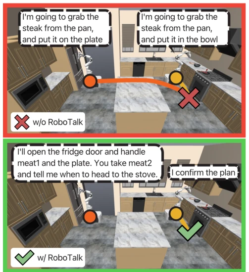
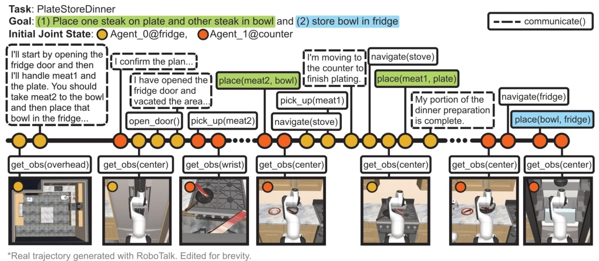
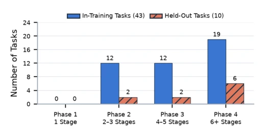
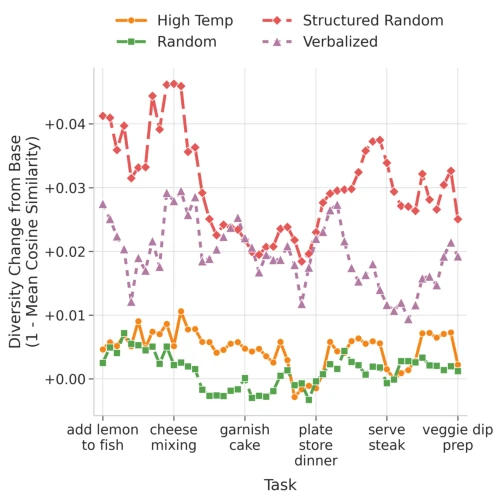
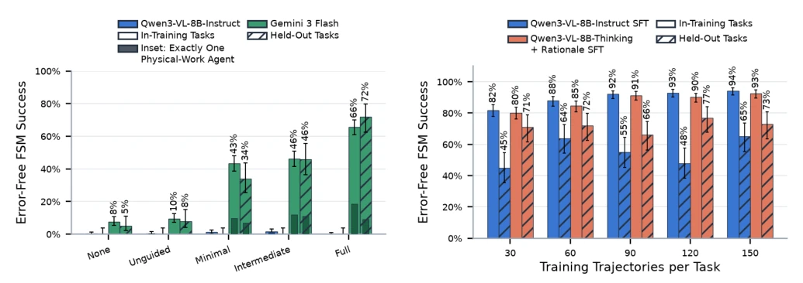
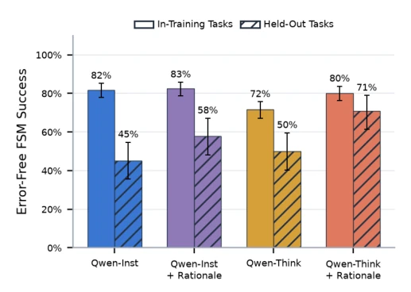

This paper attempts to use small VLMs to address the "language barrier" issue in multi-robot collaboration, achieving a 77% generalization rate through synthetic data, which appears promising, but essentially amounts to "child's play" within simulation. The most significant drawback is that data generation relies on Gemini-3-Flash; while the slogan for edge deployment is loud, training actually depends on cloud-based large models, resulting in non-negligible costs. However, unifying communication and action into a Tool Calling interface is a clever approach, at least resolving the disconnect between "speaking" and "acting". Although the dual-robot kitchen scenario is simple, the protocol design (Leader-Follower) is indeed effective, yet it remains distant from real-world complex environments. One should not expect direct deployment on physical robots, as the gap between simulation and reality has not yet been bridged.
Multi-robot collaboration is extremely challenging under partial observability. Existing works either learn communication and action separately or rely on cloud-based inference with large computational power. Although RoCo [13] and CoELA [24] explored communication, they did not solve the problem of small VLMs jointly learning communication and skill actions. TeamCraft [12] provides demonstrations but lacks explicit communication supervision. We need to implement a joint strategy for communication and action on edge-side small models, avoiding reliance on remote inference. Existing methods struggle to handle complex task allocation and synchronization on resource-constrained devices, resulting in low collaboration efficiency, and lack multimodal dataset support optimized for small models.

Fig. 1: Agents coordinate to plate steaks and place one steak in a bowl in the fridge. Top: Conflicting plans lead two agents to attempt incompatible actions. Bottom: Agents communicate to establish a shared plan and coordinate task execution.
The overall workflow is divided into three steps: first, generate trajectories using Gemini-3-Flash; second, verify action preconditions and coordination constraints using FSM; finally, replay the simulation to obtain visual observations. The innovations lie in: 1. Data generation employs Structured Random sampling to enhance communication diversity; 2. Introduction of the Leader-Follower protocol and Wait-Release mechanism to address task allocation and synchronization; 3. Unifying the Tool Calling interface, allowing the VLM to output natural language messages and physical skills simultaneously. During training, SFT is used to fine-tune Qwen3-VL, supporting Rationale tracking. The FSM ensures trajectories comply with physical rules, preventing invalid data from contaminating the model. Additionally, randomizing initial states increases trajectory diversity, ensuring the model learns robust strategies rather than relying on rote memorization.

Fig. 2: Example Trajectory: Two agents coordinate to successfully complete the PlateStoreDinner task.

Fig. 3: Task-Phase Distribution by Training Split. The 53 tasks contain no Phase 1 tasks and are concentrated in the more complex phases. Phase 4 tasks constitute the largest group in both splits, accounting for 19 of 43 in-training tasks and 6 of 10 held-out tasks.

Fig. 4: Communication Diversity By Sampling Method. Structured Random sampling outperforms all other sampling techniques for communication diversity in the generated trajectories. Each point represents a unique task.
The dataset contains 7,950 trajectories across 53 tasks. The baseline is the unfine-tuned Qwen3-VL-8B-Instruct (success rate ~2%). After fine-tuning, it achieves 94% on the training set and 65% on unseen tasks. The Thinking model with Rationale reaches 77% generalization. Ablation studies show the communication guidance protocol is crucial; without guidance, it is almost ineffective. Increasing data volume does not necessarily improve generalization, posing an overfitting risk. Experiments demonstrate that small models can learn collaboration after training, but generalization ability remains limited by data distribution. Particularly, Rationale training significantly improved performance on unseen tasks, indicating that the reasoning process aids generalization.

Fig. 5: Communication Guidance Ablation by Task Split. Full produces the highest error-free FSM success for Gemini- 3-Flash on both in-training and held-out tasks, while Qwen3- VL-8B-Instruct remains near zero across guidance conditions. The narrower nested bars show the subset of successful episodes in which exactly one agent performed all task- changing physical actions. Error bars denote 95% Wilson confidence intervals.

Fig. 7: Thinking and Rationale Ablation at 30 Trajectories per Task. Rationale training improves held-out-task perfor- mance for both model variants. Qwen3-VL-8B-Thinking with rationale supervision achieves strongest held-out performance. Error bars denote 95% Wilson confidence intervals.